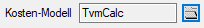

To find the "optimal" route of a section, you would need to know the runner's velocity at each point in any direction having a defined previous velocity vector.
OCourse uses a simplified model, where the velocity a each point of an equally spaced grid is defined for up to 16 directions, independent of the previous velocity.
The velocity in a point is defined by a height model, a velocity model and a method to calculate the velocity.
| Color | Description | Velocity factor |
| black | road or path | 1.0 |
| white | normal forrest or open land without any obstruction | 0.9 |
| light green | slight obstruction | 0.7 |
| medium green | medium obstruction | 0.4 |
| full green | strong obstruction | 0.2 |
| red | impassable/forbidden | 0.0001 |
The resolution defines the distance between two grid points of the calculation model. The resolution must be reasonable small (0.5m for sprint), otherwise some relevant features like impassable walls may be ignored, which can lead to wrong routes. The smaller the resolution, the longer takes the calculation time (in square relation).
Steps
defines, which connections to neighboring points are calculated.
The default option is, that all connections to points <= Sqrt(5) * resolution are calculated.
Further options are only horizontal/vertical or horizontal/vertical/diagonal.
The predefined velocity calculator is called TvmCalc (Terrain-Velocity-Model-Calculator) and
defines the velocity at a point based on the velocity model,
the slope based on the height model and ascent in running direction, also based on the height model.
For velocities > 0.95 in the velocity model, TvmCalc assumes a road and neglects the slope of the terrain. This leads to a higher runners velocity.

Programmers can define a custom velocity calculator by implementing the interface Grid.Lcp.ITvmCalc and loading the generated type
or defining custom code (c#)